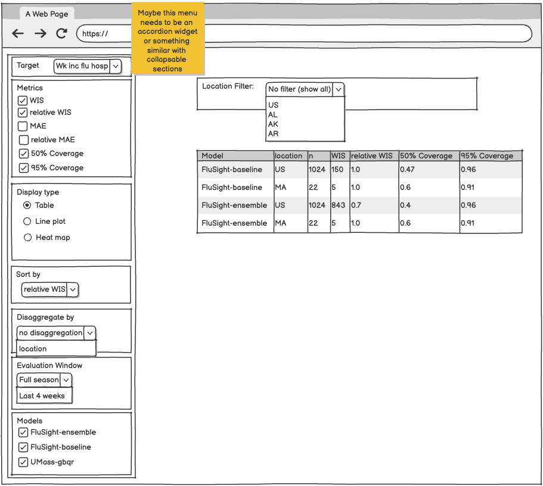
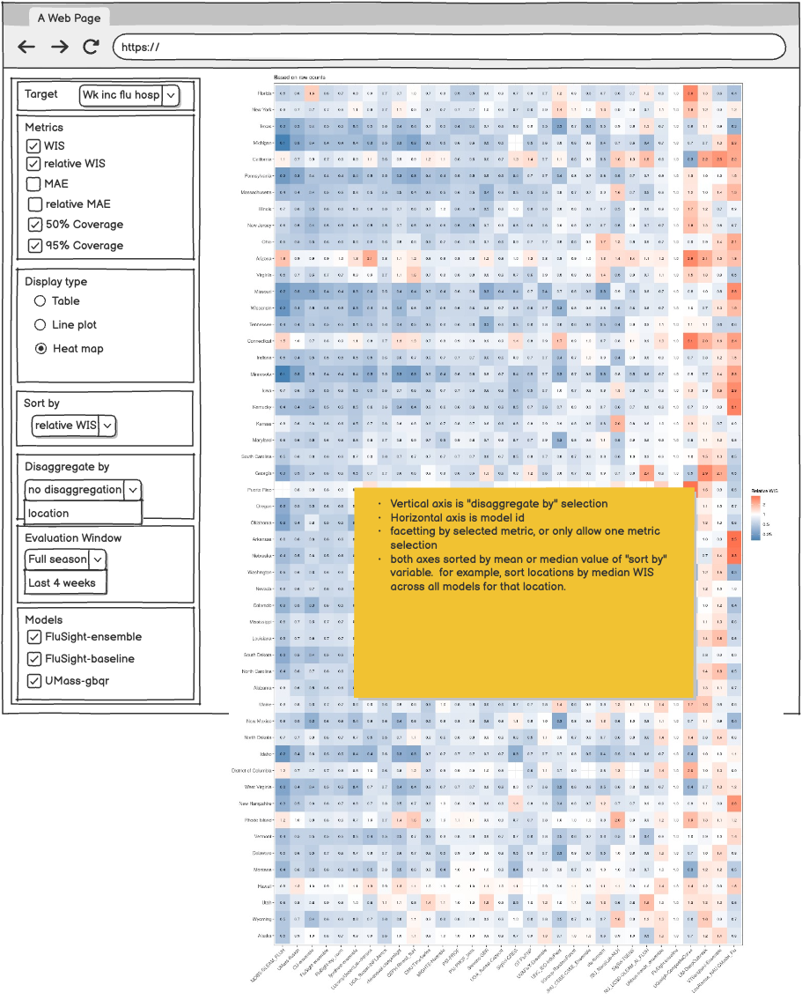
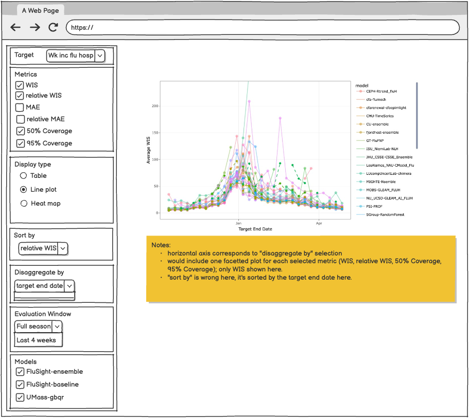

Eval dashboard planning
Table of Contents
Table of Contents
Goal
Prior art
Options, high level
Proposed UI
Acquiring the score data
Output data that we will compute
Software for end-of-round score computations
Front end/app structure
Goal
Website that can be used to explore forecast performance.
- Overall performance by model
- Performance broken down by levels of one task id variable (e.g. by location, by reference date, by horizon, by target date)
- Anti-aim: more than one task id variable is actually an anti-aim for now because it's more complex, but in practice it's what is normally done
- Scores may be represented using:
- Tables
- Line plots: one line per model showing scores over time, scores by location, etc.
- Heat maps: fill color corresponds to score value, models in rows or columns, task id variable values in columns or rows
- Key question: how to handle missing values (e.g. a team submits only for California, or teams submit for different subsets of dates).
- Past work (see next section) has used 2 main strategies:
- “Relative” scores that use a pairwise tournament approach in which each pair of models is compared on the subset of forecast tasks they produced in common. See, e.g., the reichlab flusight eval tool linked in next section.
- In an interactive tool, when a specific set of models is selected, subset to the forecast tasks the selected models have in common and aggregate scores over those tasks dynamically. See, e.g., the delphi tool linked in next section.
- The first of these options is substantially easier from a technical perspective, so I (Evan) put in a strong vote for that one.
Prior art
https://reichlab.io/flusight-eval/
https://delphi.cmu.edu/forecast-eval/
Options, high level
Score creation:
- R or python script runs at round close to compute scores and save them e.g. in an S3 bucket or on GitHub [R easier as of Dec 2024; existing R tooling for computing scores][a]
The website itself:
- R markdown document, quarto document, or similar that pre-computes all tables/figures used to display them.
- Note: we’ve tried this before for flusight evals, and were not satisfied with the results: when breaking scores down by location, the eval page took ~30s to load.
- Retrieving data based on user selections and re-rendering new content is not possible using this option.
- This motivates the following two options, with dynamic data fetches and rendering of web page elements
- Front-end Javascript app running in client side browser fetches data as needed and generates plots/etc: similar structure to predtimechart
- Web app with server-side logic to render tables and/or figures, e.g. using Shiny or Streamlit
- It would likely still make sense to set up scheduled end-of-round computation of scores to cache, as score computation can be too time-consuming to do on the fly in the context of an interactive app.
- webR or similar: R running in the browser
- This may work, but when we looked in June 2024 it wasn’t ready for prime-time yet.
- https://shinylive.io/r/examples/
- Shifting to using webR from a javascript app at a later date would not require changing the rest of the dashboard structure as a static site.
As noted above, option 1 above has not been performant when we’ve tried it in the past.
From a technical perspective, both options 2 and 3 seem workable.
Option 2 is a better fit with our current dashboard system because Option 3 involves setting up a server to run behind a dashboard (or somehow using someone’s provided hosting) and the current dashboard system involves only static webpages. Therefore it introduces another webhost beyond GitHub Pages.
Additionally, the dashboard is currently using standard libraries so there is less dependency-management involved than with one of the option 3 solutions. The Javascript app would be bundled with a set of dependencies specifically delineated.
A disadvantage with Option 2 is that it creates a front-end Javascript tool that we are responsible for developing and maintaining. The Lab’s “best” language is not Javascript.
Proposed UI
Here are some rough sketches of what this might look like:
- It could make sense to take the “sort by” out of the left-hand menu, and handle the sorting by either having clickable table column headers or adding a dropdown menu above the plots (if appropriate).

Acquiring the score data
At the end of each round, I propose to create and save a set of data objects with pre-computed scores. Subsections below describe what data we will compute and how we will compute it.
Output data that we will compute
Proposal: compute a dataset with scores for each combination of:
- Evaluation window
- Target
- Within target, task id variable you could disaggregate by (or no disaggregation)
For example, for FluSight, in the past we have done evaluations with 2 windows: (1) the full season, and (2) the last 4 reference dates. FluSight has four targets, and within those, the following options for disaggregating scores by relevant task id variables:
- No disaggregation (combine across all tasks)
- Location
- Reference_date
- Horizon
- target_end_date
- No disaggregation (combine across all tasks)
- Location
- Reference_date
- Horizon
- target_end_date
- No disaggregation (combine across all tasks)
- Location
- reference_date
- No disaggregation (combine across all tasks)
- Location
- reference_date
There will be a config file specifying what the evaluation windows to use are and what scores to compute for each of those target/task id combinations.
- Note, we may also need to say what output types to use to compute scores? E.g., for wk inc flu hosp, forecasts are submitted in both quantile and sample format. We might compute WIS and MAE based on the quantile forecasts, and energy score based on the sample forecasts?
- It may be possible to infer the desired output type to use for computing scores based on the name of the score; propose to do nothing about this until we realize it won’t work.
- For energy score, do we need to specify what the compound unit is? This gets complicated, and is a bridge we don’t have to cross quite yet…
With those settings, we would create a total of 2 * 16 = 32 files with precomputed scores at the close of each round. As an example, the structure of the file for one evaluation window, wk inc flu hosp, disaggregated by horizon, might look like this:
model_id | horizon | WIS | Relative WIS | MAE | Relative MAE | 50% Coverage | 95% Coverage |
FluSight-baseline | 0 | … | … | … | … | … | … |
FluSight-baseline | 1 | … | … | … | … | … | … |
FluSight-baseline | 2 | … | … | … | … | … | … |
We could save the files in our favorite place to save data files that need to be accessed by web apps (i.e., github or S3 bucket).
Software for end-of-round score computations
We will build this in R because then we can use the scoring functionality in the hubEvals package.
Inputs:
- hub_path: Path to a hub (something we can run hubData::connect_hub on – could be local clone or in S3)
- config_path: Path to a config file with information that’s needed to compute scores. See below for more details about the config.
- out_path: An output path where files with scores will be saved
- oracle_output: An optional data frame of oracle output to be used for evaluation. This does not need to be provided as a function argument if oracle output is stored within the hub.
Outputs:
- A collection of .csv files with scores, saved in paths like
out_path / target / eval_window / disaggregate_by / scores.csv
- Any tool can read these in. Other options are things that are more compressed, e.g. parquet, but this may put more of a development burden on the website developer.
- Should we use hive partitions for paths?
- Should we [have an option to] further partition by disaggregation value? For example, if we’re disaggregating by location, should we have subfolders/subfiles for each location?
Config structure (yaml file):
- Items are objects with these properties:
- target_id: the target id, matching the value given in the hub’s tasks config target_metadata.target_id field
- metrics: list[str]: names of metrics to compute for this target. These should be things that hubEvals::score_model_out understands.
- disaggregate_by: list[str]: names of task_id variables by which scores should be disaggregated for this target. We will always compute scores that are not disaggregated; there is no need to explicitly list something like “None” to achieve this.
- Items are objects with these properties (both optional, round ids satisfying all specified criteria are kept, if no criteria are specified then all rounds are scored):
- min_round_id: optional string with a round id. No round ids before this will be included.
- Note, we are implicitly assuming that the round ids can be sorted. This is fine if the round ids are dates in iso format…
- n_last_round_ids: optional int, subsets to the last n round ids with any model output[b]
General plan for R code:
- Build this as an R package. Name proposal: hubWebevals
- Main entry point :
#' Generate evaluation data for a hub
#'
#' @param hub_path A path to the hub. See \code{\link{hubData::hub_path}}.
#' @param webevals_config_path A path to a `webevals-config.yaml` file that
#' specifies the configuration options for the evaluation.
#' @param out_path The directory to write the evaluation data to.
#' @param oracle_output An optional data frame of oracle output to use for the evaluation. This only needs to be provided if the oracle output is not already stored within the hub.
generate_eval_data <- function(hub_path,
webevals_config_path,
out_path,
oracle_output)
- This entry point would be called by whatever process orchestrates builds of eval data after the round closing, e.g. a GitHub workflow.
- ELR to start on the R package/functionality?
Front end/app structure
Main to-dos, no matter what tooling we use to build this:
- Load data that would be used for constructing the menu at left
- Build the menu. This involves the following dependencies:
- The available metrics to show depend on the selected target
- You can only sort on selected metrics
- The task id variables by which you can disaggregate scores depend on the selected target
- Target, evaluation window → models
- It might make sense to populate the list of models once with all participating models, but only the models with scores for the selected target/window combination are available to be selected.
- Conditional on menu selections,
- Retrieve data needed to build tables or plots
- Render tables or plots
- There may be other ui items to build [on the right hand side of the screen]
- E.g. for table, above I show an option to filter the table by the selected “disaggregate by” variable. Would need to add this combo box/dropdown menu if table is selected as the deploy time.
If we go ahead with option 2 from the “Options, high level” section, I’d propose to build a javascript single page application using a setup quite similar to predtimechart.
Goals for meeting
- Feedback on the proposal
- Specify some anti-goals; how do we not get sucked into scope creep
- Some decisions about development process
- Timeline
- Who is involved
- What architecture
- DECISION: R backend, javascript app for frontend
- How much RFC/ADR/WTF process to introduce (are we going to document this or are we going to just go?)
- How to coordinate with decision making around the rest of the dashboard structure
- FluSight (promised next year)
- COVID (promised this week, but no harassment so far)
- The Shadow
[a]Nick: all of these options involve this step
[b]We could also allow for specification of a set of round ids to include, i.e., you type the ones you want to evaluate directly into your config file.